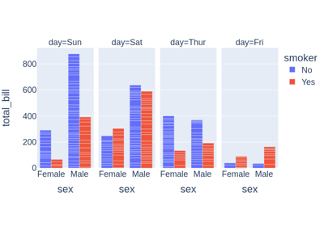

Josch's Examples
0.0.0
Welcome
Gallery
Linear Equation Solvers
Show Plotly plotting
Reference bibliography
Josch's Examples
»
Gallery
Edit on GitHub
Gallery
Linear Equation Solvers

Show Plotly plotting
Gallery generated by Sphinx-Gallery